Az IoT a közlekedés minden ágában forradalmi változásokat hoz: közúton intelligens forgalomirányítás, vasúton „vonatok internete”, vízi közlekedésben flottakövetés, légiközlekedésben prediktív karbantartás és drónintegráció.
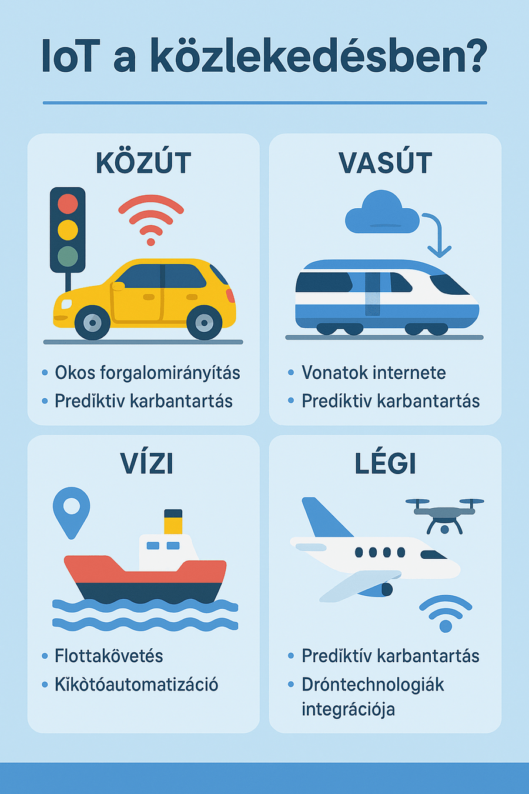
Szenzorok és kamerák valós időben mérik a forgalmat, baleseteket, torlódásokat, és automatikusan szabályozzák a jelzőlámpákat
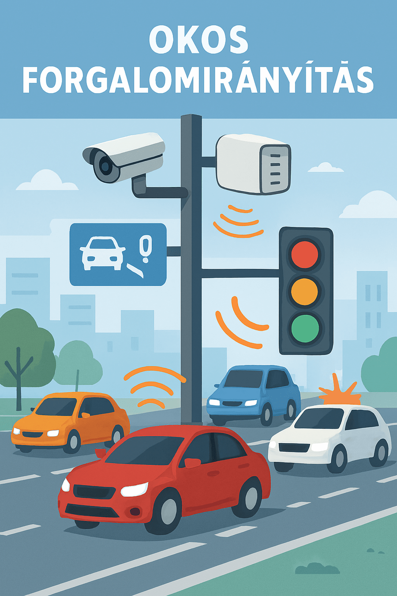
Ahol az autók közvetlenül kapnak információt az úthálózattól (pl. útlezárás, időjárási veszély).
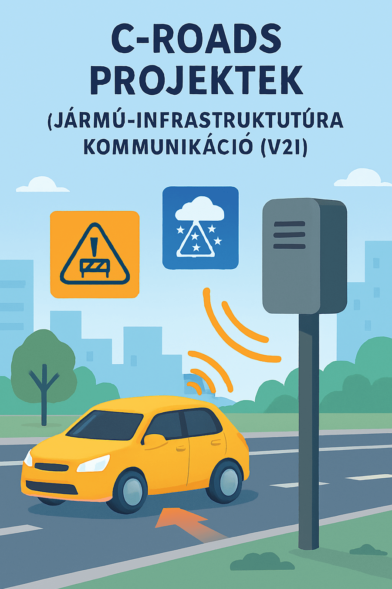
Prediktív karbantartás: IoT szenzorok jelzik az útburkolat állapotát, így időben lehet beavatkozni.
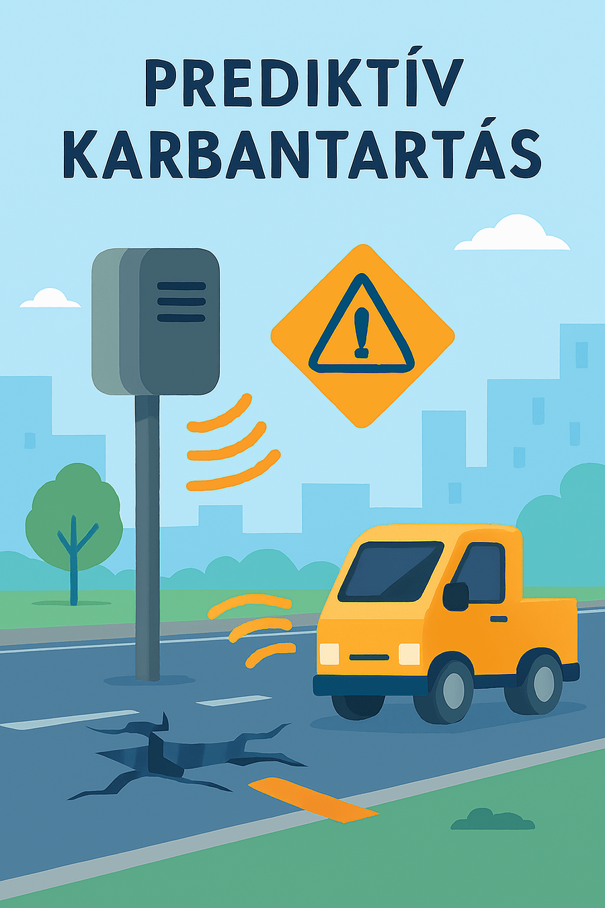
Vonatok internete: a vasúti járművek és infrastruktúra összekapcsolása felhőn keresztül, ami kiszámíthatóbb menetrendet és jobb tervezhetőséget ad
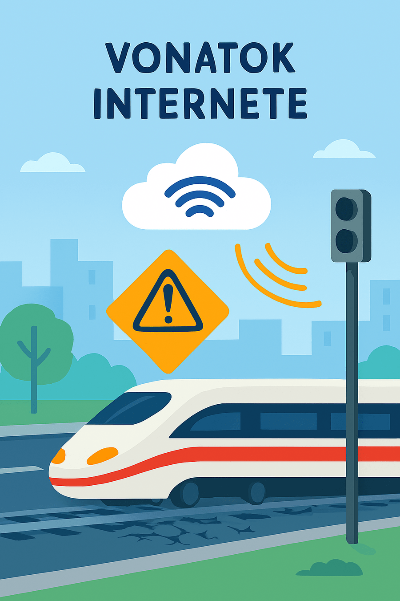
Prediktív karbantartás: szenzorok figyelik a tengelyek, fékek, motorok állapotát, így megelőzhetők a meghibásodások.
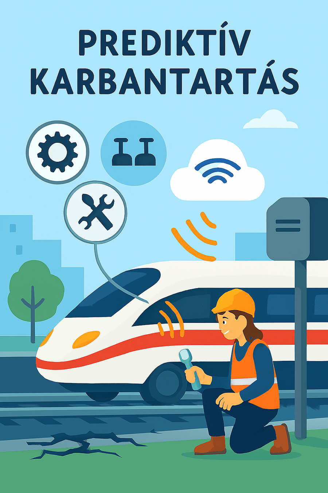
Digitális ökoszisztéma: Siemens Mobility példája, ahol a valós és digitális világ összeolvad, kényelmesebb és fenntarthatóbb vasúti közlekedést biztosít
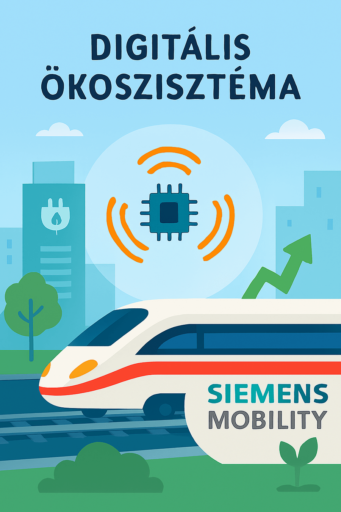
Hajók helyzetének, üzemanyag-fogyasztásának és rakományának valós idejű monitorozása.
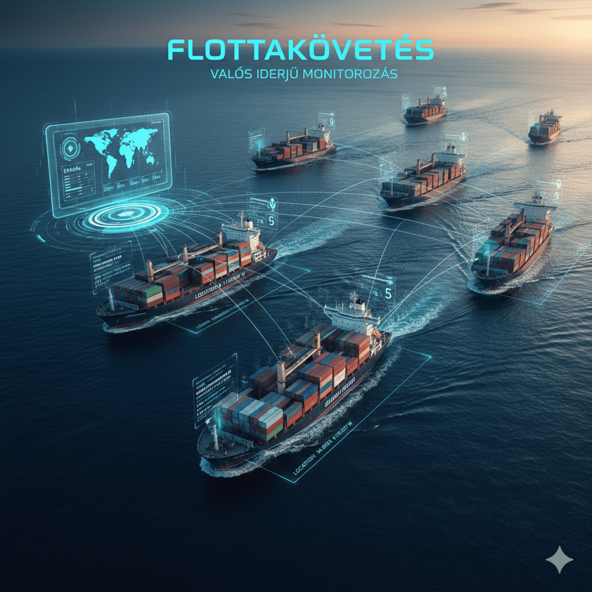
IoT-alapú rendszerek optimalizálják a rakodást, dokkolást, és csökkentik a várakozási időt
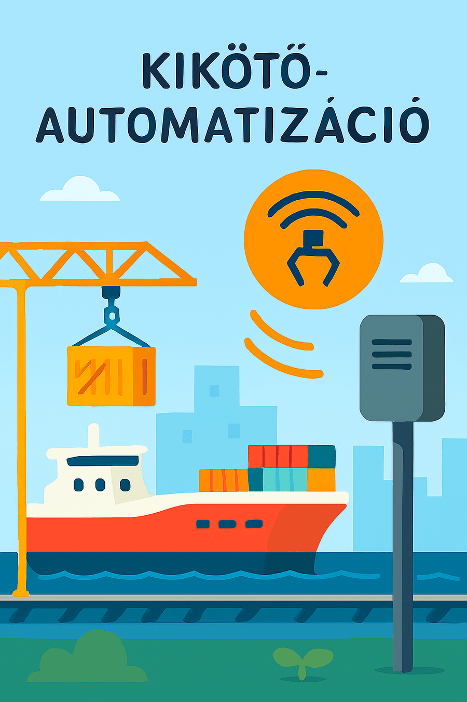
Szenzorok mérik a vízminőséget és a károsanyag-kibocsátást, támogatva a fenntartható üzemeltetést.
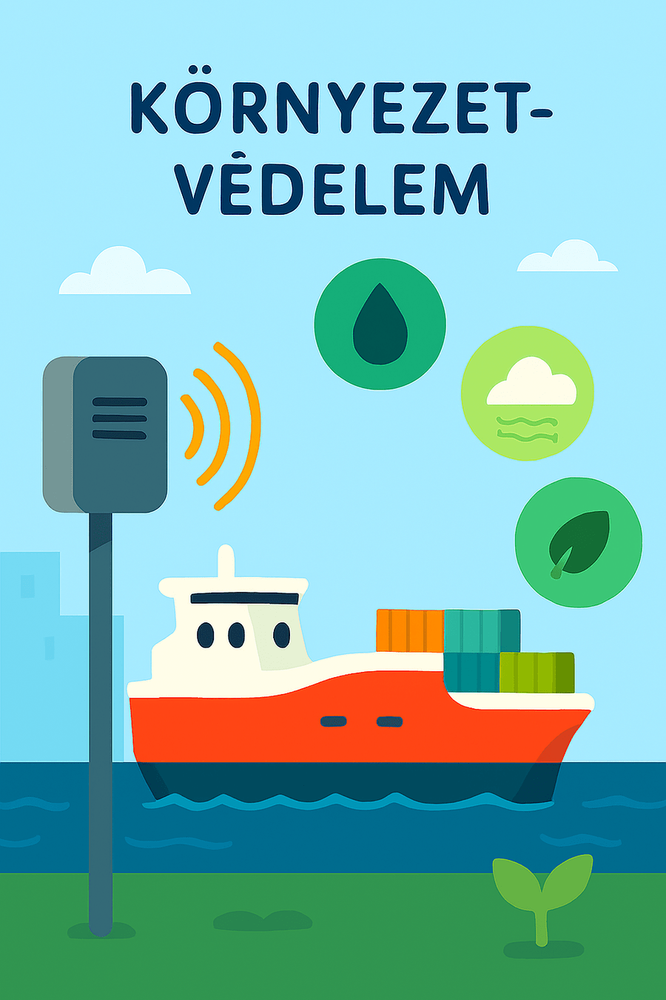
Repülőgépek motorjait és rendszereit szenzorok figyelik, így előre jelezhetők a hibák
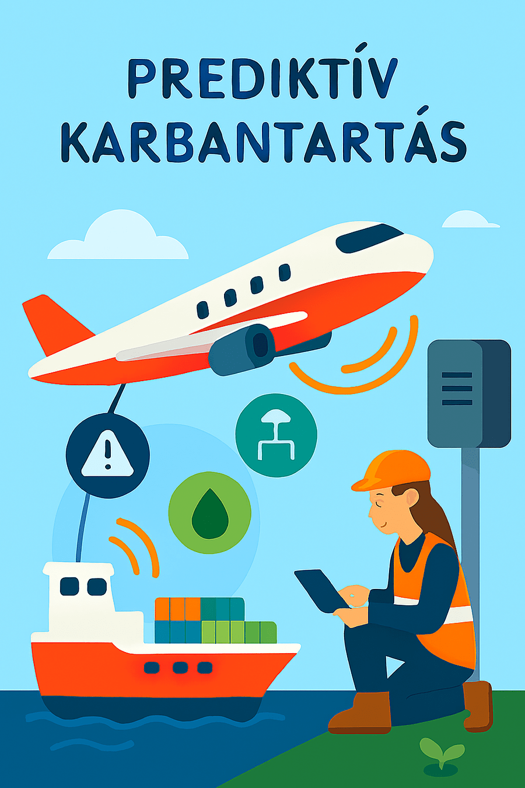
IoT segíti a drónok szabályozását és légiforgalomba illesztését.
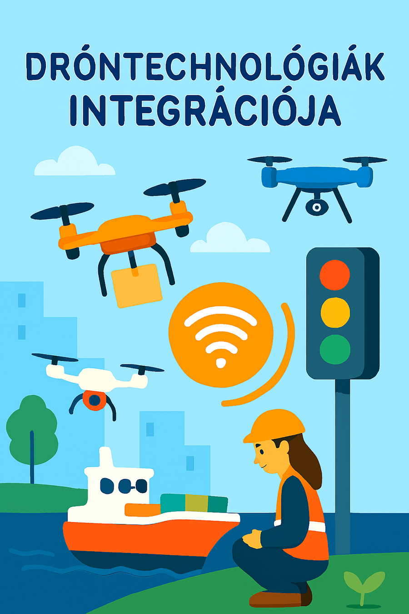
Valós idejű poggyászkövetés, okos beszállítási rendszerek, és IoT-alapú biztonsági ellenőrzések.
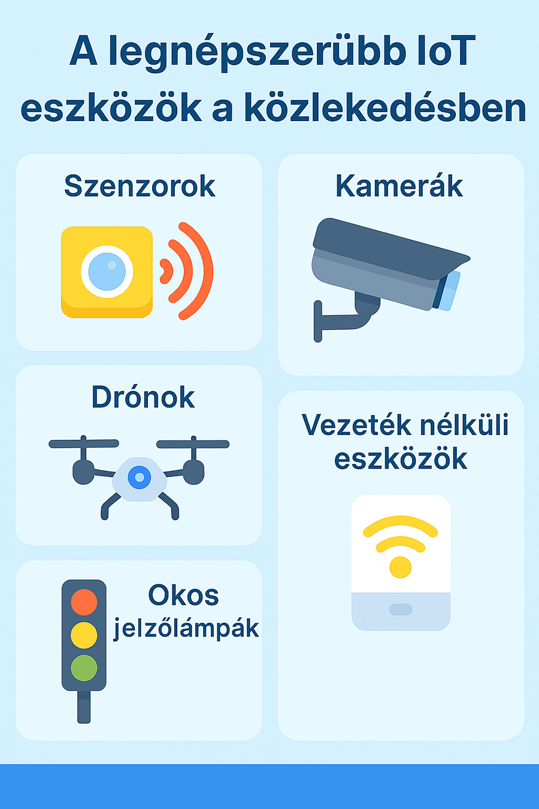
OBD-II telematikai eszközök: járműdiagnosztika, vezetési stílus elemzése, üzemanyag-hatékonyság mérése.
V2X (Vehicle-to-Everything) modulok: kommunikáció más járművekkel, infrastruktúrával, gyalogosokkal.
Okos forgalomirányító szenzorok: jelzőlámpák, sebességmérők, torlódásfigyelők.
ADAS rendszerek: szenzorokkal támogatott vezetéstámogató rendszerek (pl. sávtartás, vészfékezés).
Tengely- és fékszenzorok: valós idejű állapotfigyelés, karbantartás előrejelzése.
Digitális pályafelügyeleti szenzorok: sínállapot, hőmérséklet, rezgésfigyelés.
Vonatkövető GPS modulok: pontos menetrend és utastájékoztatás.
Karbantartási IoT hubok: Siemens Railigent rendszer például gépi tanulással optimalizálja a karbantartást
AIS (Automated Identification System): hajók helyzetének és mozgásának nyomon követése.
Üzemanyag- és rakománymonitorozó szenzorok: hatékonyabb logisztika és környezetvédelem.
Kikötői IoT rendszerek: rakodás, dokkolás, vízminőség-ellenőrzés.
Hajófedélzeti IoT gateway-ek: adatgyűjtés és továbbítás a központi rendszerek felé.
Motor- és rendszerdiagnosztikai szenzorok: repülőgép állapotának folyamatos figyelése.
Drónok: légiforgalmi megfigyelés, karbantartási feladatok, csomagszállítás.
Poggyászkövető RFID és Bluetooth eszközök: utasélmény javítása.
Okos beszállító kapuk: utasáramlás optimalizálása.
5G és edge computing: gyors adatátvitel és helyi feldolgozás.
AI-alapú predikció: gépi tanulás segíti a karbantartási döntéseket.
IoT platformok: mint a Siemens MindSphere vagy Azure IoT, amelyek összegyűjtik és elemzik az adatokat
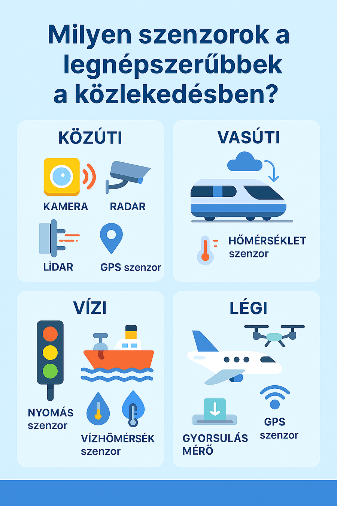
Kamerák: objektumfelismerés, sávtartás, gyalogosok és járművek detektálása.
Radar szenzorok: távolságmérés, holttérfigyelés, automatikus fékezés.
LiDAR (Light Detection and Ranging): 3D környezetérzékelés autonóm járművekben
GPS modulok: helymeghatározás, navigáció, flottakövetés.
TPMS (gumiabroncsnyomás-érzékelő): biztonságos vezetéshez elengedhetetlen.
MAP szenzor: motor szívócső nyomásának mérése, üzemanyag-optimalizálás
Tengelyszenzorok: kopás, vibráció, hőmérséklet figyelése.
Pályaszenzorok: sín deformáció, hőmérséklet, rezgés.
GPS és GNSS szenzorok: pontos helymeghatározás, menetrend optimalizálás.
Környezeti szenzorok: időjárás, páratartalom, hőmérséklet a pályák mentén.
AIS (Automated Identification System): hajók helyzetének és mozgásának követése.
Üzemanyag- és rakománymonitor szenzorok: logisztikai hatékonyság.
Vízminőség-érzékelők: környezetvédelem és fenntartható működés.
Motor- és rendszerdiagnosztikai szenzorok: repülésbiztonság, prediktív karbantartás.
Gyorsulásmérők és giroszkópok: repülési stabilitás, navigáció.
Drón szenzorok: távolság, magasság, akadályérzékelés.
RFID/Bluetooth szenzorok: poggyászkövetés, utasélmény javítása.
A közlekedési szegmensek IoT-eszközei jellemzően kis méretű, megbízható és biztonságos operációs rendszereket használnak: közúton és vasúton FreeRTOS, Zephyr, Linux-alapú rendszerek dominálnak, míg vízi és légi közlekedésben gyakoriak a beágyazott Linux és real-time OS-ek.
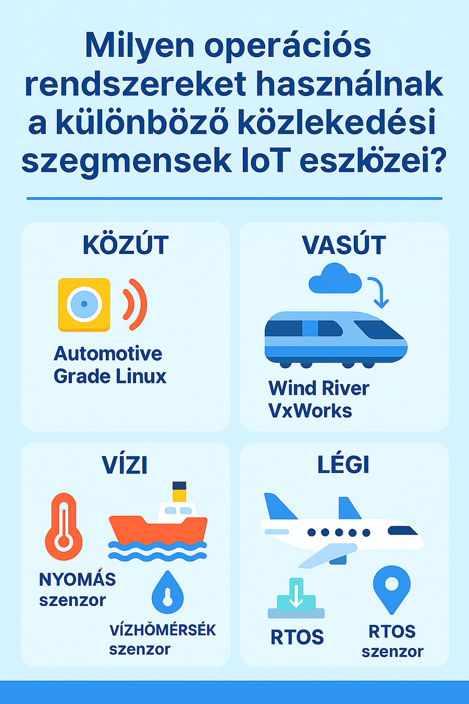
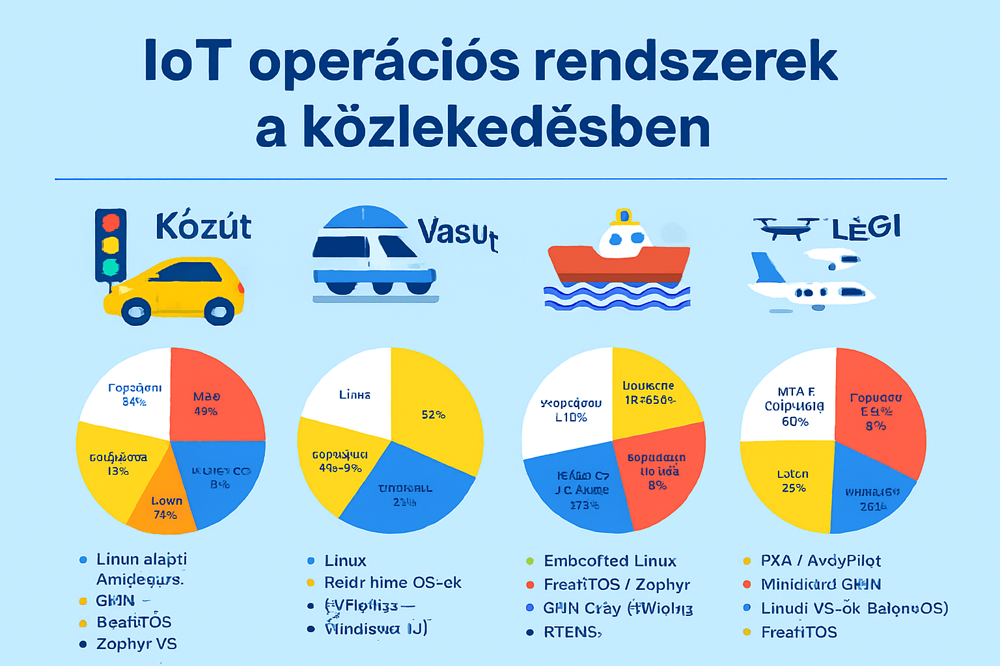
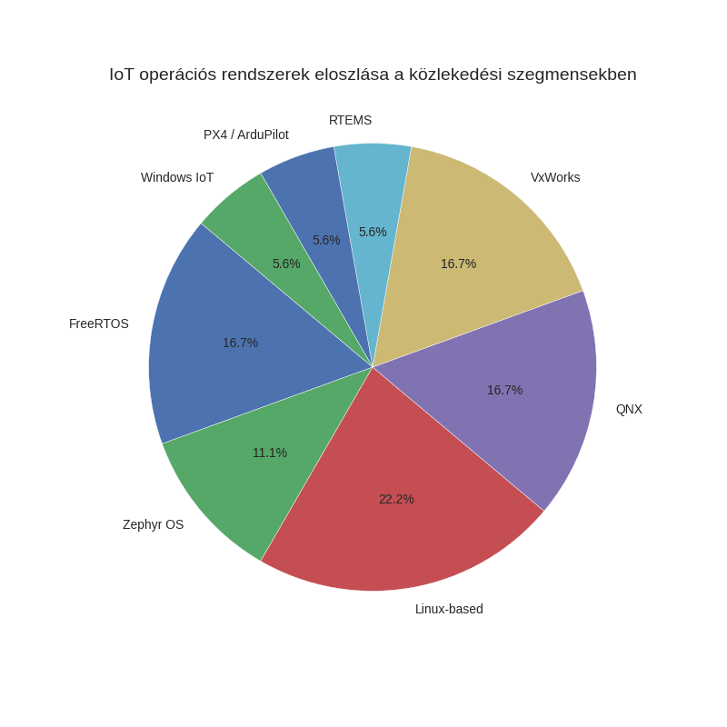
Valós idejű válasz, OTA frissítés, biztonságos V2X.